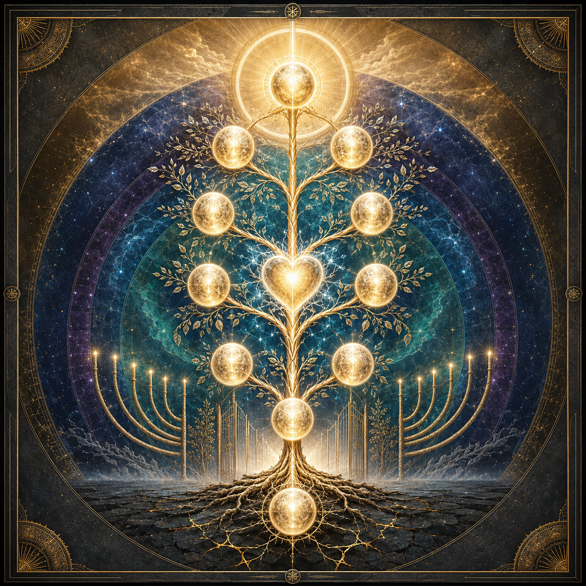

אמת
הכרה מדויקת בלי טשטוש ובלי זהות של ייאוש.
40 פרשנויות. 12 שערים. דרך אחת המחברת אמת, תיקון, בנייה, אהבה ודבקות.
״וְשַׁבְתָּ עַד־ה׳ אֱלֹהֶיךָ… בְּכָל־לְבָבְךָ וּבְכָל־נַפְשֶׁךָ״
לא מחיקת העבר, אלא שינוי תפקידו: מן הכוח שהרחיק — אל הכוח שבונה.
הכרה מדויקת בלי טשטוש ובלי זהות של ייאוש.
השבה, פיוס וגבול שמפסיק את המשך הנזק.
מידה, תגובה והרגל חדשים למבחן הבא.
המרת אנרגיית הנפילה לתורה, חסד ושליחות.
כל כרטיס כולל מקור, תמצית וצעד מעשי.
נסו מונח אחר או אפסו את המסננים.
סמנו כל שער שהשלמתם. ההתקדמות נשמרת במכשיר בלבד.

השבת החיבור בין הערך למעשה, בין הנשמה לדיבור, ובין הלב לדרך החיים.
עצירה, גבול, השבה ותיקון ממשי.
רגש, מידה ותגובה חלופית.
הבנה, סיפור וזהות מתוקנת.
אהבה, דבקות ואחדות הכוונה.
כתבו אמת, תיקון וצעד הבא. התוכן נשמר בדפדפן בלבד ואינו נשלח לשום שרת.